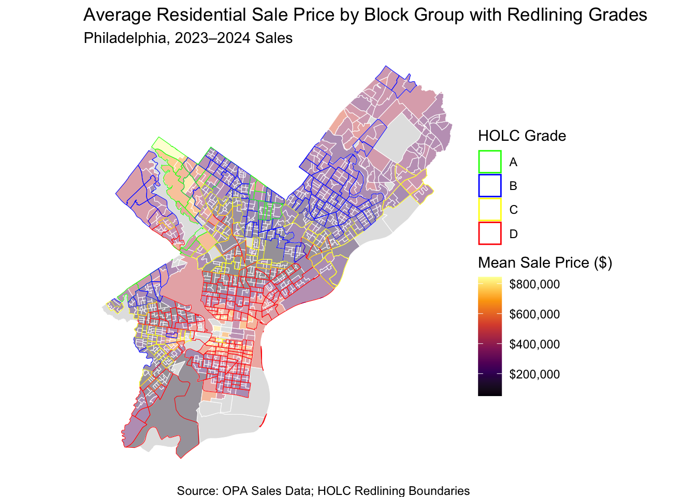
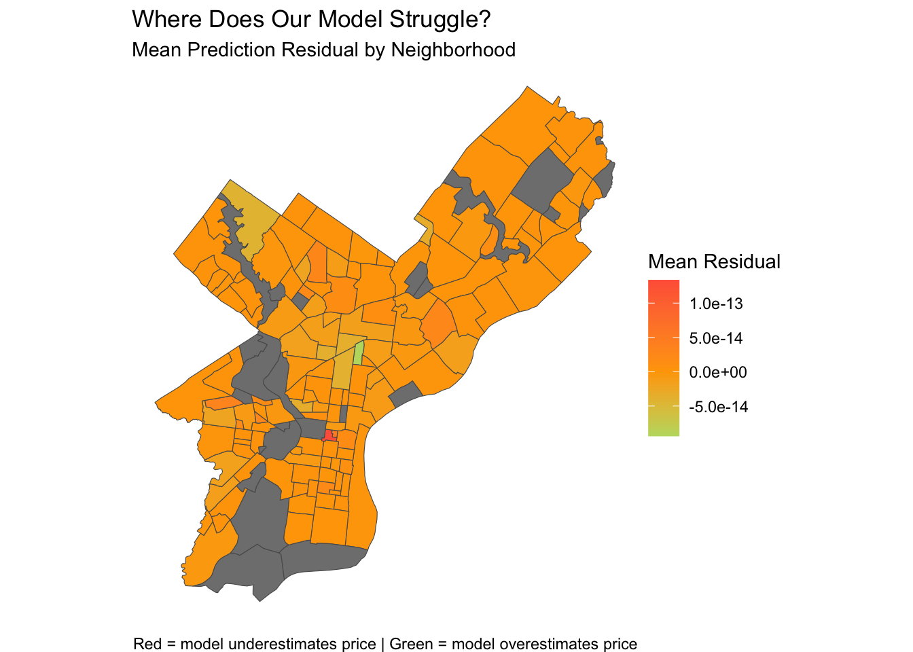

New names:
Rows: 18771 Columns: 44
── Column specification
──────────────────────────────────────────────────────── Delimiter: "," chr
(4): NAME, location, Name, name_cv dbl (39): ...1, GEOID, year_built.x,
number_of_bathrooms.x, number_of_bedroo... lgl (1): is_influential
ℹ Use `spec()` to retrieve the full column specification for this data. ℹ
Specify the column types or set `show_col_types = FALSE` to quiet this message.
• `` -> `...1`
Historic redlining grades overlap with current home sale prices
Code
#|echo: false#|eval: false#both maps combined with lower transparncy for avg sales/block groupggplot() +geom_sf(data = sale_price_byblockgroup_geo, aes(fill = mean_price), color ="white", size =0.01, alpha =0.45) +geom_sf(data = redlining_phl, aes(color =as.factor(grade)), fill =NA, size =0.8) +scale_fill_viridis_c(name ="Mean Sale Price ($)",option ="inferno",na.value ="grey",labels = scales::dollar ) +scale_color_manual(name ="HOLC Grade",values =c("0"="grey", "1"="green", "2"="blue", "3"="yellow", "4"="red"),labels =c("1"="A", "2"="B", "3"="C", "4"="D") ) +labs(title ="Average Residential Sale Price by Block Group with Redlining Grades",subtitle ="Philadelphia, 2023–2024 Sales",caption ="Source: OPA Sales Data; HOLC Redlining Boundaries" ) +theme_void()

What Drives Prices?
Code
#|echo: false#|eval: false#|message: false#|warning: false#|results: 'hide'#scatterplots for correlation between sale price and structural data#log sale price and number of bedroomsp1 <-ggplot(data = housing_census_geo_no_na) +aes(x = number_of_bedrooms, y = log_sale_price) +geom_point(alpha =0.3) +geom_smooth(method ="lm", color ="red", se =FALSE) +labs(title =" Number of Bedrooms vs Log of Sales Price",x ="Number of Bedrooms",y ="Log Sales Price") +theme_minimal()#log sale price and number of bathrooms p2 <-ggplot(data = housing_census_geo_no_na) +aes(x = number_of_bathrooms, y = log_sale_price) +geom_point(alpha =0.3) +geom_smooth(method ="lm", color ="red", se =FALSE) +labs(title ="Number of Bathrooms vs Log of Sales Price",x ="Number of Bathrooms",y ="Log Sales Price") +theme_minimal()#log sale price and total liveable areap3 <-ggplot(data = housing_census_geo_no_na) +aes(x = total_livable_area, y = log_sale_price) +geom_point(alpha =0.3) +geom_smooth(method ="lm", color ="red", se =FALSE)+labs (title ="Total Livable Area vs Log of Sales Price",x ="Total Livable Area",y ="Log of Sales Price") +theme_minimal()housing_census_geo_no_na$year_built <-as.numeric(housing_census_geo_no_na$year_built)
Warning: NAs introduced by coercion
Code
#log sale price and year built#log sale price and share of residents with at least a bachelor's degreep5 <-ggplot(data = housing_census_geo_no_na) +aes(x = BACH_PROP, y = log_sale_price) +geom_point(alpha =0.3) +geom_smooth(method ="lm", color ="red", se =FALSE) +labs(title =" Bachelor's Degree vs Log of Sales Price",x ="Bachelor's Degree Proportion",y ="Log of Sales Price") +theme_minimal() p4 <-ggplot(data = dat_load) +aes(x = age, y = log_sale_price.x) +geom_point(alpha =0.3) +geom_smooth(method ="lm", color ="red", se =FALSE) +labs(title =" Age of building vs Log of Sales Price",x ="Age in Years",y ="Log of Sales Price") +theme_minimal()#google and claude (generate the code) and r blogs assisted for beautification and fittingcombined_struc <- (p1 + p2 + p3 + p4 + p5)+plot_layout(ncol =2) &theme(plot.title =element_text(size =8),axis.title =element_text(size =7),axis.text =element_text(size =6))combined_struc
`geom_smooth()` using formula = 'y ~ x'
`geom_smooth()` using formula = 'y ~ x'
`geom_smooth()` using formula = 'y ~ x'
`geom_smooth()` using formula = 'y ~ x'
`geom_smooth()` using formula = 'y ~ x'
Livable area: A 10% larger home sells for ~6.3% more
Number of bathrooms: Each additional bathroom adds ~19% to sale price
Race: A block group 10 percentage points whiter is associated with homes selling for 4.1% more
Parks within 400m: Neighborhoods with double the park access see prices ~2.8% higher
Log crime score: A 10% higher crime score is associated with 0.47% lower sale prices
Model Performance
Final Model with Neighborhood Fixed Effects
RMSE to 0.3905 and explaining variance up to 70%.
Median Absolute Error is USD 42,994 against a median sale price of USD 250,000.
Model Performance
Code
#calculating residualsdat <- dat_load %>%mutate(residual = log_sale_price.x - predicted)#aggregating to neighborhood levelresiduals_by_hood <- dat_load %>%group_by(name_cv) %>%summarise(mean_residual =mean(residual, na.rm =TRUE),n =n()) %>%ungroup()#joining back to neighborhood shapefilen_hoods_residuals <- n_hoods %>%left_join(residuals_by_hood, by =c("Name"="name_cv"))#mapping itggplot() +geom_sf(data = n_hoods_residuals, aes(fill = mean_residual)) +scale_fill_gradient2(low ="lightgreen",mid ="orange", high ="tomato",midpoint =0,name ="Mean Residual" ) +labs(title ="Where Does Our Model Struggle?",subtitle ="Mean Prediction Residual by Neighborhood",caption ="Red = model underestimates price | Green = model overestimates price" ) +theme_void()

Limitations & Next Steps
Limitation: One neighborhood where prices are systematically underestimated is Center City East, while the neighborhood where prices are overestimated is Fairhill, which needs to be further investigated.
Next Steps: Jams & Co intends to enhance the model by conducting other model diagnostics, by analyzing factors such as spatial autocorrelation.
Recommendations
Our model is a holistic and comprehensive predicive model for home sale prices, and we recommend it be used to support property tax determination
We recommend supplementary screening and surveying for neighborhoods that are systematically under and over predicted by the model.